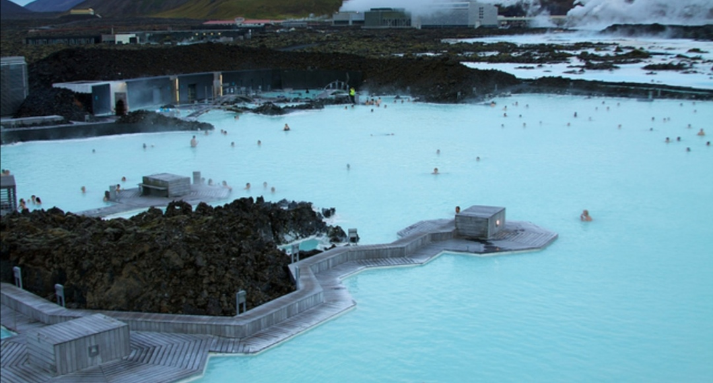
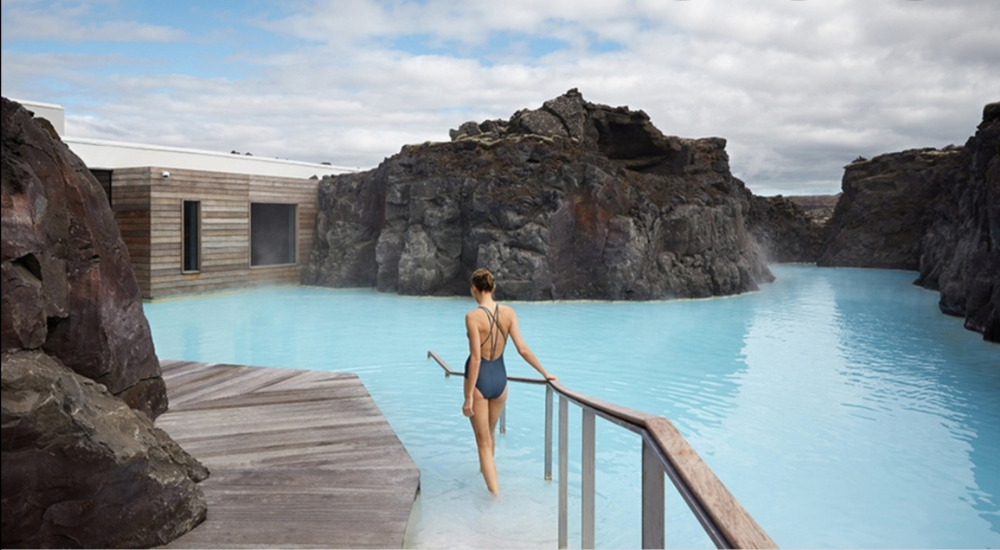
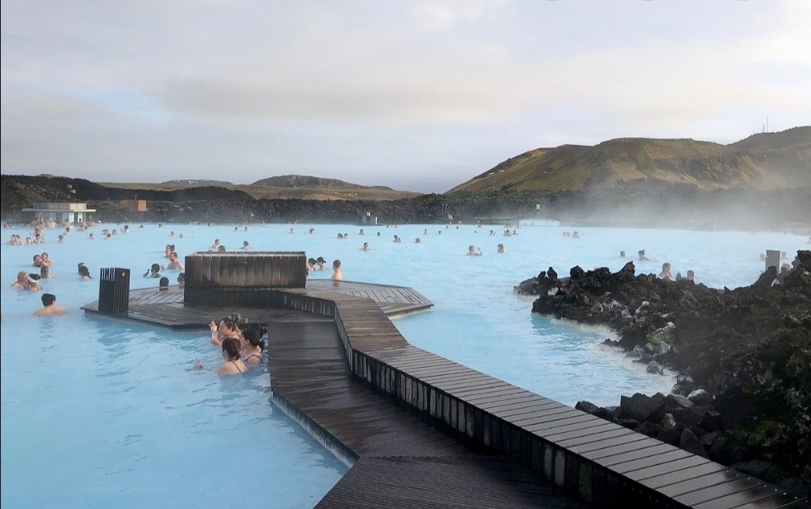
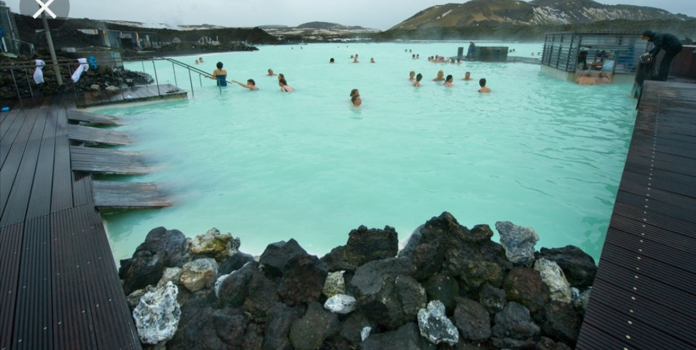
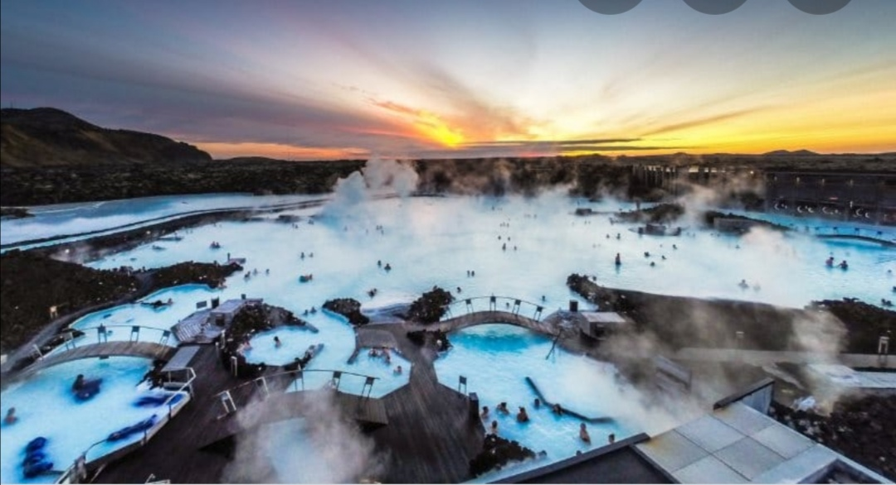
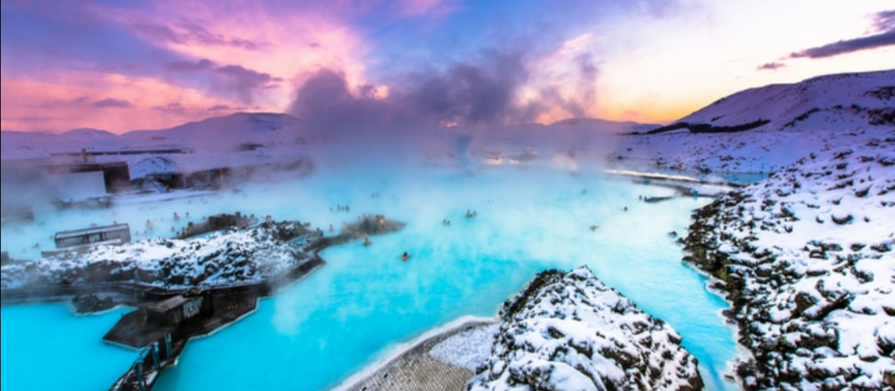
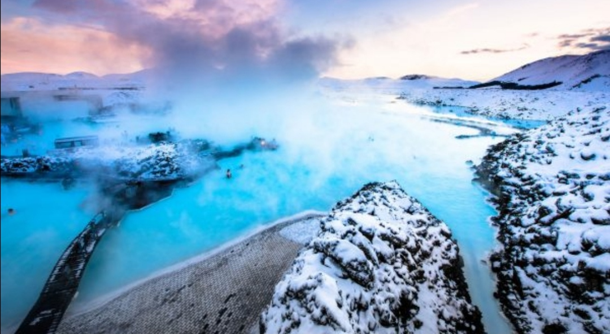
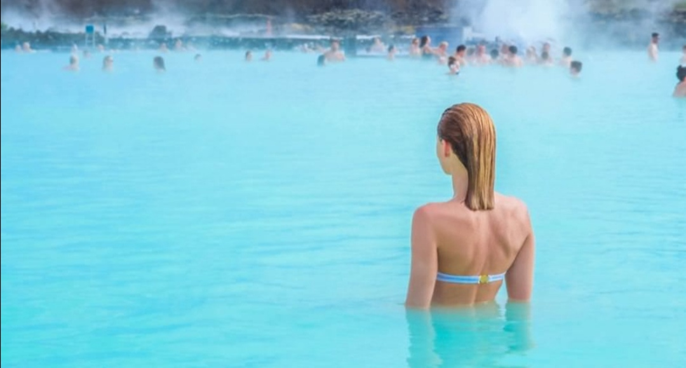

|  |  | Nous ne parlons pas du cocktail mdr, mais d'un endroit en Islande. C 'est un endroit ou les températures sont assez basses dépassant rarement 20°, surtout en juilletil fait donc froid et ça toute l'année. En janvier, le soleil se lève juste à 11h20 et se couche 4h plus tard, Le BLEU LAGON est plus attirant que le mot attirant de par son centre géothermal et très tourisrique à perte de vue. Du coup la température de l'eau est bien chaude, à une température constante de 40° d'ou son nom de usine électrique. |
||||||||||||
|  |  | Le il faudra juste y plonger et nous imaginons que c'est le paradis. Chaque année 400000 touristes y font trempette. Non seulement l'eau de mer est riche en minéraux tels que le silice qui fait des merveilles pour la peau, mais propose aussi des soins contre le psoriasis. Pour y plonger, il faut au minimum 2 ans et l'entrée est gratuite pour les enfants de 2 à 13ansune fois que vous y irez, il vous sera indispensable de réserver votre entrée plusieurs jours, voire semaine. C'est grace à ses atouts que sans doute des stars comme Béyonce, Kim Kardashians'y sont rendu, alors pourquoi pas vous! |
||||||||||||
|  |
|  |  | |||||||||||||||||||||
|  |